Deep Generative Models, VAEs, and GANs#
So far, the course has mostly focused on reconstruction models: given a measured datum \(\boldsymbol{y}^\delta\), train a neural network that outputs an image estimate \(\boldsymbol{x}_{\mathrm{pred}}\). This is a discriminative point of view, because the model learns a direct map from one variable to another.
A deep generative model has a different objective. Instead of predicting one quantity from another, it tries to learn the distribution of the images themselves. If the data distribution is denoted by \(p_{\mathrm{data}}(\boldsymbol{x})\), the goal is to build a parametrized model that approximates it well enough to generate new realistic samples, capture the variability of the dataset, and provide a learned prior for inverse problems.
This notebook introduces the first two major families of deep generative models: Variational Autoencoders (VAEs) and Generative Adversarial Networks (GANs). The discussion is deliberately more mathematical than in the end-to-end chapter, because here the probabilistic interpretation matters. At the same time, the focus remains practical: the notebook ends with explicit training scripts on the Mayo dataset and a simple inverse-problem example based on image deblurring.
Deep Generative Models and Deep Latent Variable Models#
{kind=link}
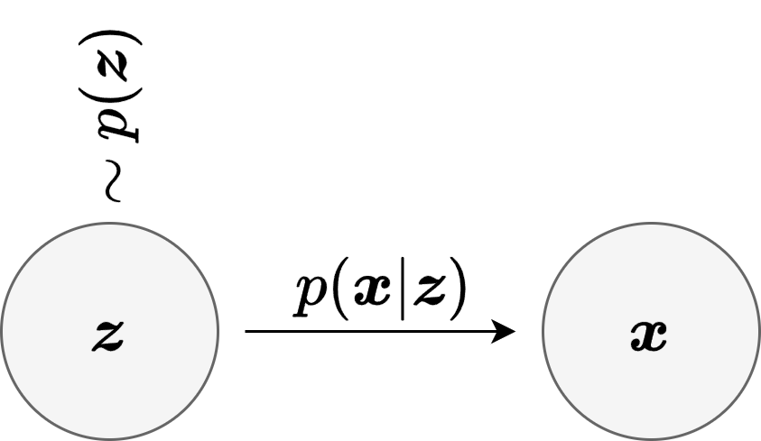
At the most general level, a generative model is a model of the probability law of the data. If images are denoted by \(\boldsymbol{x} \in \mathbb{R}^n\), the ideal target is the unknown distribution \(p_{\mathrm{data}}(\boldsymbol{x})\). A deep generative model introduces trainable parameters \(\Theta\) and defines a family of models
which is trained so that \(p_\Theta\) becomes close to \(p_{\mathrm{data}}\). A very common strategy is to introduce a lower-dimensional latent variable \(\boldsymbol{z} \in \mathbb{R}^d\), with \(d \ll n\), and to describe image generation in two stages:
This is the general structure of a Deep Latent Variable Model (DLVM). The prior \(p(\boldsymbol{z})\) is usually chosen to be simple, for example \(\mathcal{N}(0,I)\), while the conditional law \(p_\Theta(\boldsymbol{x} \mid \boldsymbol{z})\) is made expressive by a neural network. The induced marginal model is then
The notion of latent vector is important enough to pause on it explicitly. A latent vector should be thought of as a compressed internal description of the image. It is not meant to store every pixel one by one. Instead, it encodes the main factors that explain the image in a more compact form. For example, if one had a dataset of handwritten digits, the latent vector might implicitly encode properties such as the digit identity, the stroke thickness, the slant, or the overall writing style. For medical slices such as the Mayo images used in this notebook, the latent vector may encode coarser structural information: the global anatomy, the position of bright and dark regions, the shape of the main structures, and some notion of local texture.
In other words, the latent vector is not usually interpretable coordinate by coordinate, but it is still useful to think of it as a compressed representation of the object. The decoder then takes this compressed description and expands it back into a full image. This is why latent-variable models are so attractive: they suggest that highly structured images may live near a much lower-dimensional manifold inside the ambient pixel space.
There are two main ways to interpret this mathematically.
In an explicit generative model, one writes a probabilistic model directly and tries to optimize or approximate a likelihood. This is the viewpoint behind VAEs.
In an implicit generative model, one defines a sampling mechanism
without necessarily having a tractable formula for \(p_\Theta(\boldsymbol{x})\). This is the viewpoint behind GANs.
The word generator therefore has a precise meaning: it is the map that transforms a simple random variable \(\boldsymbol{z}\) into a complex sample \(\boldsymbol{x}\) that should look like the training data.
Note
In this notebook we resize the Mayo images to \(64 \times 64\) when training VAEs and GANs. This keeps the code light enough for teaching purposes while preserving the main algorithmic ideas.
Typical Neural Architectures for Image Generators#
When the data are images, the neural architecture of a generative model is almost never an arbitrary MLP. The reason is the same as in the end-to-end reconstruction chapter: images contain strong local structure, spatial correlations, and multi-scale patterns. For this reason, most practical image generators are built from convolutional encoder-decoder blocks.
{kind=link}
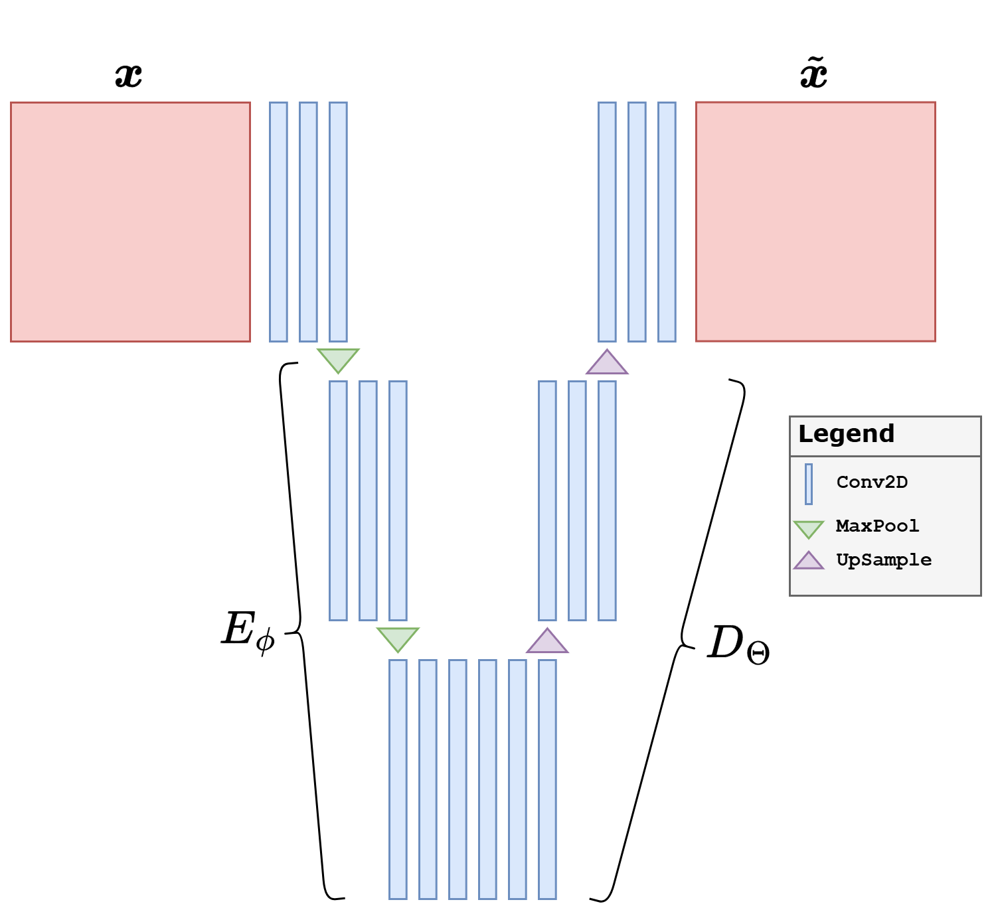
A typical design follows a simple multi-scale logic.
An encoder progressively reduces the spatial resolution while increasing the number of channels. In this way, local image content is compressed into more abstract feature maps and finally into a compact latent representation.
A decoder does the reverse: it starts from a latent code or a coarse feature tensor and progressively upsamples it back to the image size.
A bottleneck sits in the middle and forces the model to summarize the image through a compact latent representation.
For images, common architectural choices are repeated Conv2d layers in the encoder, repeated ConvTranspose2d or Upsample + Conv2d layers in the decoder, and non-linearities such as ReLU or LeakyReLU. Normalization layers are also common, especially in GAN generators and discriminators. If the images are normalized in \([0,1]\), a final Sigmoid is natural; if they are normalized in \([-1,1]\), a final Tanh is often preferred.
{kind=link}
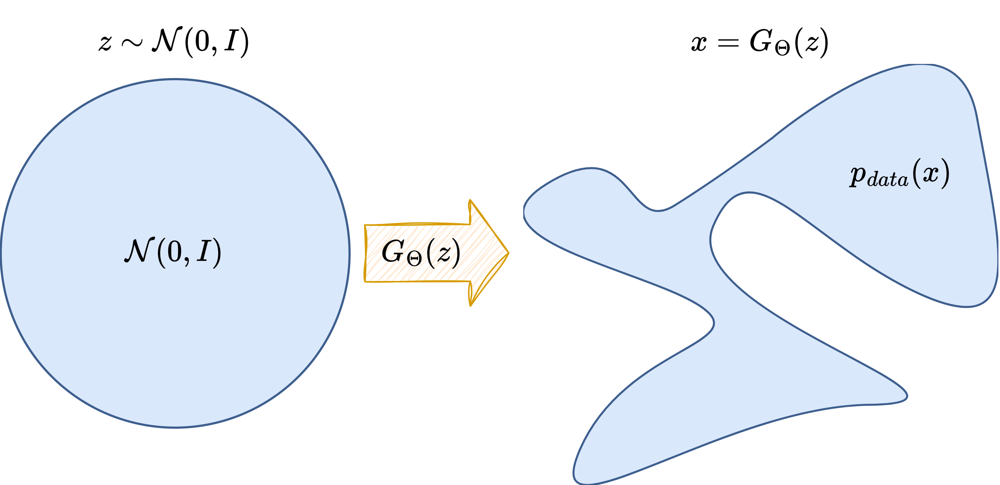
The precise architecture depends on the model family.
In a VAE, one usually has an encoder-decoder structure that is very close to an AutoEncoder.
In a GAN, the generator is usually a pure decoder-like network, while the discriminator is an encoder-like network that maps an image to a scalar score.
Note
The architectural discussion in this notebook is intentionally focused on the standard convolutional case, since the training examples below use image generators for the Mayo slices. More advanced alternatives are possible, including Transformers and hybrid convolution-attention designs, but the convolutional setting is the most natural place to start.
Warning
A very common practical issue in image generators is the appearance of checkerboard artifacts. These artifacts are often caused by transposed convolutions, since the learned upsampling can produce uneven overlap patterns on the pixel grid. When this happens, a safer alternative is to separate the two operations: first upsample the feature map explicitly, and only afterwards apply a standard convolution. This is the design used in the implementations below.
import glob
import math
import sys
from pathlib import Path
import matplotlib.pyplot as plt
import torch
import torch.nn.functional as F
from PIL import Image
from torch import nn
from torch.utils.data import DataLoader, Dataset
from torchvision import transforms
from tqdm.auto import tqdm
sys.path.append('..')
from IPPy import operators, utilities
book_root = Path('..').resolve()
weights_dir = book_root / 'weights'
weights_dir.mkdir(exist_ok=True)
class MayoDataset(Dataset):
def __init__(self, data_path, data_shape=64):
super().__init__()
self.fname_list = sorted(glob.glob(f'{data_path}/*/*.png'))
self.transform = transforms.Compose([
transforms.ToTensor(),
transforms.Resize((data_shape, data_shape)),
])
def __len__(self):
return len(self.fname_list)
def __getitem__(self, idx):
x = Image.open(self.fname_list[idx]).convert('L')
return self.transform(x)
def show_batch(batch, title, ncols=4):
batch = batch.detach().cpu()
n = min(len(batch), 8)
nrows = math.ceil(n / ncols)
fig, axes = plt.subplots(nrows, ncols, figsize=(3 * ncols, 3 * nrows))
axes = axes.reshape(-1) if hasattr(axes, 'reshape') else [axes]
for ax, image in zip(axes, batch[:n]):
ax.imshow(image.squeeze(), cmap='gray')
ax.axis('off')
for ax in axes[n:]:
ax.axis('off')
fig.suptitle(title)
plt.tight_layout()
plt.show()
device = utilities.get_device()
train_dataset = MayoDataset(data_path=str(book_root / 'Mayo' / 'train'), data_shape=64)
test_dataset = MayoDataset(data_path=str(book_root / 'Mayo' / 'test'), data_shape=64)
train_loader = DataLoader(train_dataset, batch_size=32, shuffle=True)
test_loader = DataLoader(test_dataset, batch_size=32, shuffle=False)
print('Device:', device)
print('Training images:', len(train_dataset))
print('Test images:', len(test_dataset))
print('Weights directory:', weights_dir)
x_batch = next(iter(train_loader))
show_batch(x_batch[:8], 'Example Mayo slices resized to 64x64')
Device: cuda
Training images: 3306
Test images: 327
Weights directory: C:\Users\tivog\computational-imaging\years\2025-26\weights
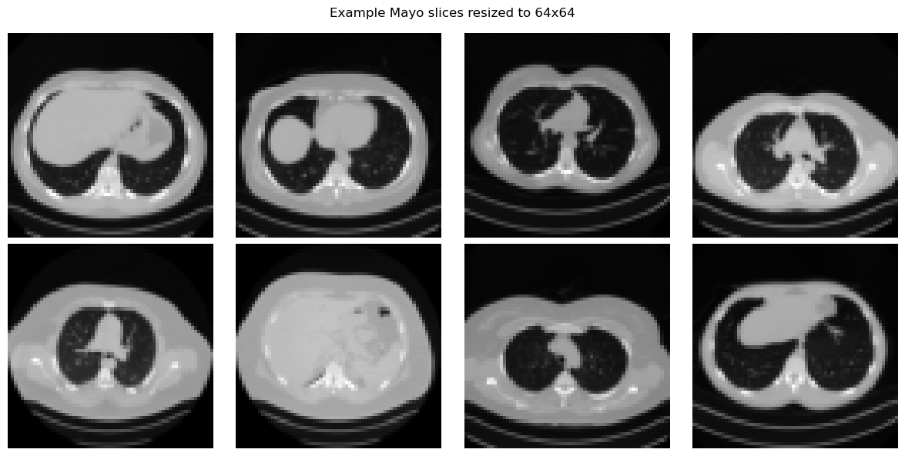
Variational Autoencoders (VAE)#
{kind=link}
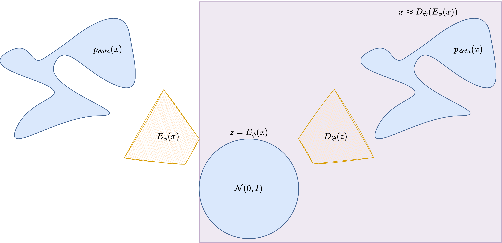
A Variational Autoencoder should first be understood as a probabilistic version of an AutoEncoder. A classical AutoEncoder is composed of two neural networks:
The encoder \(E_\phi\) compresses the input image into a latent code, while the decoder \(D_\Theta\) reconstructs the image from that code. In the deterministic AutoEncoder case, training usually minimizes a reconstruction loss such as
For images, this architecture is usually convolutional: the encoder progressively downsamples the image and increases the number of channels, while the decoder mirrors that process and upsamples back to the original size. This is exactly the architectural backbone reused by most VAEs.
The VAE keeps this encoder-decoder logic, but changes the latent bottleneck in a crucial way. Instead of mapping the image to a single deterministic code \(\boldsymbol{z}\), the encoder produces the parameters of a probability distribution. In the notation of the figure above,
The full probabilistic model is written as
with prior \(p(\boldsymbol{z}) = \mathcal{N}(0,I)\). The decoder network parameterizes the conditional law \(p_\Theta(\boldsymbol{x} \mid \boldsymbol{z})\).
The main difficulty is that the true posterior distribution
is intractable. The VAE therefore introduces an approximate posterior, also called the recognition model,
which is usually Gaussian with image-dependent mean and variance:
The quantity one would ideally maximize is \(\log p_\Theta(\boldsymbol{x})\), but since this is hard, the VAE optimizes the Evidence Lower Bound (ELBO):
This objective has a very natural interpretation.
The reconstruction term forces the decoder to preserve enough information to rebuild the image.
The KL term regularizes the latent representation so that it remains close to the simple Gaussian prior.
A crucial ingredient is the reparameterization trick. Instead of sampling directly from the Gaussian defined by the encoder, one writes
which keeps the randomness explicit while preserving differentiability with respect to the network parameters.
{kind=link}
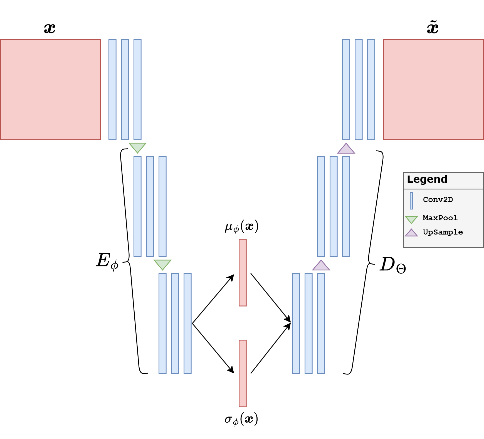
For teaching purposes, it is worth spelling out the architecture used in the code. The input image is a grayscale Mayo slice of size \(64 \times 64\). The encoder starts from a shallow convolutional stem and then applies four downsampling blocks. At each stage, the spatial size is halved,
while the number of channels increases as
Each block contains a convolution, normalization, a nonlinearity, and a residual refinement. The final tensor of size \(512 \times 4 \times 4\) is flattened and mapped to two vectors, namely the mean \(\boldsymbol{\mu}\) and the log-variance \(\log \boldsymbol{\sigma}^2\), each of dimension \(64\). This is the latent bottleneck of the model.
The decoder mirrors the same multiscale logic. Starting from a latent vector \(\boldsymbol{z} \in \mathbb{R}^{64}\), a linear layer first reshapes it into a coarse feature tensor of size \(512 \times 4 \times 4\). Then four upsampling blocks progressively reconstruct the image back to size \(64 \times 64\). In the current implementation, every upsampling stage uses explicit interpolation followed by a standard convolution, instead of a transposed convolution. This is a deliberate design choice to reduce checkerboard artifacts.
A second architectural detail is the choice of Group Normalization and SiLU nonlinearities. Group Normalization is often more stable than Batch Normalization when batch sizes are moderate, which is useful in generative models. Residual blocks are used both in the encoder and in the decoder so that each stage can refine the features without making the optimization excessively fragile.
In practice, VAEs are attractive because they provide a well-structured latent space and a principled probabilistic objective. However, one must be precise about what can go wrong. A VAE may reconstruct images quite well and still generate poor random samples. This happens when the decoder learns to work well on the encoded latent vectors produced by the training images, but those latent vectors are not sufficiently close to the prior distribution \(\mathcal{N}(0,I)\). In that case, the model behaves more like a strong AutoEncoder than like a true generative model.
This is exactly the point to emphasize pedagogically. Good reconstructions are not enough. If we want to sample new images by drawing \(\boldsymbol{z} \sim \mathcal{N}(0,I)\), then the latent space must actually be organized so that this prior is meaningful. For this reason, the code below uses three practical choices.
The latent dimension is kept moderate, so that the bottleneck cannot simply memorize too much information.
The KL term is computed in the standard way, namely as a sum over the latent coordinates and then averaged over the batch.
The variational stage uses a capacity-annealing idea: instead of keeping the KL almost irrelevant, we progressively force the latent representation toward a controlled information budget.
The overall training is still split in two stages. First, the network is trained as a deterministic AutoEncoder so that encoder and decoder learn a reasonable reconstruction map. Afterwards, the variational regularization is turned on and the latent space is shaped explicitly. This preserves the pedagogical bridge between AutoEncoders and VAEs, but it also makes the generative part of the model much more credible.
Warning
If the KL term is too weak, the model may reconstruct well but fail as a generative model, because the encoded latent vectors drift away from the Gaussian prior. If the KL term is too strong too early, the model may instead collapse to blurry reconstructions. In practice, one needs a compromise: a bottleneck that is expressive enough to reconstruct, but regularized enough that sampling from the prior remains meaningful.
It is also worth remembering that the original VAE is only the beginning. Important variants include \(\beta\)-VAE [17], hierarchical VAEs, vector-quantized models, and many hybrid approaches that try to improve the sharpness of the generated images.
def norm_layer(channels):
num_groups = 8 if channels >= 8 else 1
return nn.GroupNorm(num_groups=num_groups, num_channels=channels)
class ResidualBlock(nn.Module):
def __init__(self, channels):
super().__init__()
self.block = nn.Sequential(
norm_layer(channels),
nn.SiLU(),
nn.Conv2d(channels, channels, kernel_size=3, padding=1),
norm_layer(channels),
nn.SiLU(),
nn.Conv2d(channels, channels, kernel_size=3, padding=1),
)
def forward(self, x):
return x + self.block(x)
class DownBlock(nn.Module):
def __init__(self, in_ch, out_ch):
super().__init__()
self.block = nn.Sequential(
nn.Conv2d(in_ch, out_ch, kernel_size=4, stride=2, padding=1),
norm_layer(out_ch),
nn.SiLU(),
ResidualBlock(out_ch),
)
def forward(self, x):
return self.block(x)
class UpsampleBlock(nn.Module):
def __init__(self, in_ch, out_ch):
super().__init__()
self.block = nn.Sequential(
nn.Upsample(scale_factor=2, mode='bilinear', align_corners=False),
nn.Conv2d(in_ch, out_ch, kernel_size=3, padding=1),
norm_layer(out_ch),
nn.SiLU(),
ResidualBlock(out_ch),
)
def forward(self, x):
return self.block(x)
class ConvVAE(nn.Module):
def __init__(self, latent_dim=64):
super().__init__()
self.latent_dim = latent_dim
self.stem = nn.Sequential(
nn.Conv2d(1, 32, kernel_size=3, padding=1),
norm_layer(32),
nn.SiLU(),
ResidualBlock(32),
)
self.down1 = DownBlock(32, 64)
self.down2 = DownBlock(64, 128)
self.down3 = DownBlock(128, 256)
self.down4 = DownBlock(256, 512)
self.fc_mu = nn.Linear(512 * 4 * 4, latent_dim)
self.fc_logvar = nn.Linear(512 * 4 * 4, latent_dim)
self.fc_decode = nn.Linear(latent_dim, 512 * 4 * 4)
self.up1 = UpsampleBlock(512, 256)
self.up2 = UpsampleBlock(256, 128)
self.up3 = UpsampleBlock(128, 64)
self.up4 = UpsampleBlock(64, 32)
self.out_conv = nn.Sequential(
norm_layer(32),
nn.SiLU(),
nn.Conv2d(32, 1, kernel_size=3, padding=1),
nn.Sigmoid(),
)
def encode(self, x):
h = self.stem(x)
h = self.down1(h)
h = self.down2(h)
h = self.down3(h)
h = self.down4(h)
h = h.flatten(start_dim=1)
mu = self.fc_mu(h)
logvar = self.fc_logvar(h).clamp(min=-4.5, max=1.0)
return mu, logvar
def reparameterize(self, mu, logvar):
std = torch.exp(0.5 * logvar)
eps = torch.randn_like(std)
return mu + eps * std
def decode(self, z):
h = self.fc_decode(z).view(z.shape[0], 512, 4, 4)
h = self.up1(h)
h = self.up2(h)
h = self.up3(h)
h = self.up4(h)
return self.out_conv(h)
def reconstruct_deterministic(self, x):
mu, _ = self.encode(x)
return self.decode(mu)
def forward(self, x):
mu, logvar = self.encode(x)
z = self.reparameterize(mu, logvar)
x_hat = self.decode(z)
return x_hat, mu, logvar
def vae_loss(x_hat, x, mu, logvar, gamma=5e-4, capacity=0.0):
recon_l1 = F.l1_loss(x_hat, x)
recon_mse = F.mse_loss(x_hat, x)
recon = recon_l1 + 0.1 * recon_mse
kl_per_sample = -0.5 * torch.sum(1 + logvar - mu.pow(2) - logvar.exp(), dim=1)
kl = kl_per_sample.mean()
loss = recon + gamma * torch.abs(kl - capacity)
return loss, recon, kl
torch.manual_seed(0)
latent_dim = 64
vae = ConvVAE(latent_dim=latent_dim).to(device)
pretrain_optimizer = torch.optim.Adam(vae.parameters(), lr=1e-3)
finetune_optimizer = torch.optim.Adam(vae.parameters(), lr=3e-4)
pretrain_epochs = 10
finetune_epochs = 40
vae_history = []
vae_path = weights_dir / 'VAE.pth'
# Stage 1: deterministic AutoEncoder pretraining
for epoch in range(pretrain_epochs):
vae.train()
epoch_loss = 0.0
progress_bar = tqdm(train_loader, desc=f'AE pretrain {epoch + 1}/{pretrain_epochs}', leave=True)
for step, x_batch in enumerate(progress_bar, start=1):
x_batch = x_batch.to(device)
x_rec = vae.reconstruct_deterministic(x_batch)
loss = F.l1_loss(x_rec, x_batch) + 0.1 * F.mse_loss(x_rec, x_batch)
pretrain_optimizer.zero_grad()
loss.backward()
pretrain_optimizer.step()
epoch_loss += loss.item()
progress_bar.set_postfix(loss=f'{loss.item():.5f}', avg=f'{epoch_loss / step:.5f}')
vae_history.append(epoch_loss / len(train_loader))
# Stage 2: variational fine-tuning with latent-capacity control
for epoch in range(finetune_epochs):
vae.train()
epoch_loss = 0.0
capacity = min(12.0, (epoch + 1) / finetune_epochs * 12.0)
progress_bar = tqdm(train_loader, desc=f'VAE finetune {epoch + 1}/{finetune_epochs}', leave=True)
for step, x_batch in enumerate(progress_bar, start=1):
x_batch = x_batch.to(device)
x_rec, mu, logvar = vae(x_batch)
loss, recon, kl = vae_loss(x_rec, x_batch, mu, logvar, gamma=5e-4, capacity=capacity)
finetune_optimizer.zero_grad()
loss.backward()
finetune_optimizer.step()
epoch_loss += loss.item()
progress_bar.set_postfix(loss=f'{loss.item():.5f}', recon=f'{recon.item():.5f}', kl=f'{kl.item():.3f}', cap=f'{capacity:.2f}')
vae_history.append(epoch_loss / len(train_loader))
torch.save(vae.state_dict(), vae_path)
print(f'Saved VAE weights to: {vae_path}')
reloaded_vae = ConvVAE(latent_dim=latent_dim)
reloaded_vae.load_state_dict(torch.load(vae_path, map_location='cpu', weights_only=True))
reloaded_vae = reloaded_vae.to(device)
reloaded_vae.eval()
with torch.no_grad():
x_vis = next(iter(test_loader))[:8].to(device)
x_rec, mu_vis, logvar_vis = reloaded_vae(x_vis)
z = torch.randn(8, latent_dim, device=device)
x_gen = reloaded_vae.decode(z)
posterior_std = torch.exp(0.5 * logvar_vis)
print(f'Posterior mean std: {mu_vis.std().item():.3f}')
print(f'Posterior std mean: {posterior_std.mean().item():.3f}')
fig, axes = plt.subplots(3, 8, figsize=(14, 5))
for i in range(8):
axes[0, i].imshow(x_vis[i].cpu().squeeze(), cmap='gray')
axes[0, i].axis('off')
axes[1, i].imshow(x_rec[i].cpu().squeeze(), cmap='gray')
axes[1, i].axis('off')
axes[2, i].imshow(x_gen[i].cpu().squeeze(), cmap='gray')
axes[2, i].axis('off')
axes[0, 0].set_ylabel('Target', rotation=0, labelpad=30)
axes[1, 0].set_ylabel('Recon.', rotation=0, labelpad=30)
axes[2, 0].set_ylabel('Sample', rotation=0, labelpad=30)
plt.tight_layout()
plt.show()
plt.figure(figsize=(5, 3))
plt.plot(vae_history)
plt.title('VAE training loss')
plt.xlabel('Epoch')
plt.grid(alpha=0.3)
plt.tight_layout()
plt.show()
AE pretrain 1/10: 100%|██████████| 104/104 [00:34<00:00, 3.04it/s, avg=0.09909, loss=0.09326]
AE pretrain 2/10: 100%|██████████| 104/104 [00:33<00:00, 3.12it/s, avg=0.08045, loss=0.07391]
AE pretrain 3/10: 100%|██████████| 104/104 [00:32<00:00, 3.16it/s, avg=0.07084, loss=0.06022]
AE pretrain 4/10: 100%|██████████| 104/104 [00:35<00:00, 2.91it/s, avg=0.05256, loss=0.05106]
AE pretrain 5/10: 100%|██████████| 104/104 [00:34<00:00, 3.04it/s, avg=0.04302, loss=0.04339]
AE pretrain 6/10: 100%|██████████| 104/104 [00:33<00:00, 3.06it/s, avg=0.03899, loss=0.03825]
AE pretrain 7/10: 100%|██████████| 104/104 [00:33<00:00, 3.11it/s, avg=0.03597, loss=0.03760]
AE pretrain 8/10: 100%|██████████| 104/104 [00:33<00:00, 3.07it/s, avg=0.03415, loss=0.03509]
AE pretrain 9/10: 100%|██████████| 104/104 [00:33<00:00, 3.15it/s, avg=0.03227, loss=0.03605]
AE pretrain 10/10: 100%|██████████| 104/104 [00:33<00:00, 3.13it/s, avg=0.03068, loss=0.02976]
VAE finetune 1/40: 100%|██████████| 104/104 [00:33<00:00, 3.08it/s, cap=0.30, kl=19.642, loss=0.08532, recon=0.07565]
VAE finetune 2/40: 100%|██████████| 104/104 [00:32<00:00, 3.20it/s, cap=0.60, kl=20.409, loss=0.06434, recon=0.05444]
VAE finetune 3/40: 100%|██████████| 104/104 [00:32<00:00, 3.22it/s, cap=0.90, kl=29.762, loss=0.07159, recon=0.05715]
VAE finetune 4/40: 100%|██████████| 104/104 [00:32<00:00, 3.23it/s, cap=1.20, kl=21.643, loss=0.06383, recon=0.05361]
VAE finetune 5/40: 100%|██████████| 104/104 [00:33<00:00, 3.13it/s, cap=1.50, kl=21.009, loss=0.05735, recon=0.04759]
VAE finetune 6/40: 100%|██████████| 104/104 [00:32<00:00, 3.18it/s, cap=1.80, kl=23.607, loss=0.05119, recon=0.04028]
VAE finetune 7/40: 100%|██████████| 104/104 [00:32<00:00, 3.22it/s, cap=2.10, kl=19.473, loss=0.05048, recon=0.04179]
VAE finetune 8/40: 100%|██████████| 104/104 [00:32<00:00, 3.23it/s, cap=2.40, kl=17.870, loss=0.04709, recon=0.03935]
VAE finetune 9/40: 100%|██████████| 104/104 [00:32<00:00, 3.23it/s, cap=2.70, kl=20.690, loss=0.04341, recon=0.03442]
VAE finetune 10/40: 100%|██████████| 104/104 [00:32<00:00, 3.24it/s, cap=3.00, kl=17.555, loss=0.04082, recon=0.03355]
VAE finetune 11/40: 100%|██████████| 104/104 [00:32<00:00, 3.23it/s, cap=3.30, kl=13.061, loss=0.04739, recon=0.04251]
VAE finetune 12/40: 100%|██████████| 104/104 [00:32<00:00, 3.24it/s, cap=3.60, kl=15.892, loss=0.04703, recon=0.04089]
VAE finetune 13/40: 100%|██████████| 104/104 [00:32<00:00, 3.25it/s, cap=3.90, kl=15.433, loss=0.03837, recon=0.03260]
VAE finetune 14/40: 100%|██████████| 104/104 [00:32<00:00, 3.24it/s, cap=4.20, kl=15.634, loss=0.03725, recon=0.03153]
VAE finetune 15/40: 100%|██████████| 104/104 [00:32<00:00, 3.21it/s, cap=4.50, kl=16.682, loss=0.03988, recon=0.03379]
VAE finetune 16/40: 100%|██████████| 104/104 [00:32<00:00, 3.21it/s, cap=4.80, kl=14.444, loss=0.03431, recon=0.02949]
VAE finetune 17/40: 100%|██████████| 104/104 [00:32<00:00, 3.23it/s, cap=5.10, kl=16.469, loss=0.03410, recon=0.02842]
VAE finetune 18/40: 100%|██████████| 104/104 [00:32<00:00, 3.19it/s, cap=5.40, kl=15.689, loss=0.02923, recon=0.02408]
VAE finetune 19/40: 100%|██████████| 104/104 [00:32<00:00, 3.22it/s, cap=5.70, kl=13.719, loss=0.03081, recon=0.02680]
VAE finetune 20/40: 100%|██████████| 104/104 [00:32<00:00, 3.16it/s, cap=6.00, kl=14.966, loss=0.03037, recon=0.02589]
VAE finetune 21/40: 100%|██████████| 104/104 [00:32<00:00, 3.20it/s, cap=6.30, kl=14.497, loss=0.03167, recon=0.02757]
VAE finetune 22/40: 100%|██████████| 104/104 [00:32<00:00, 3.24it/s, cap=6.60, kl=15.085, loss=0.03514, recon=0.03089]
VAE finetune 23/40: 100%|██████████| 104/104 [00:32<00:00, 3.21it/s, cap=6.90, kl=15.980, loss=0.03164, recon=0.02710]
VAE finetune 24/40: 100%|██████████| 104/104 [00:32<00:00, 3.22it/s, cap=7.20, kl=16.900, loss=0.03037, recon=0.02552]
VAE finetune 25/40: 100%|██████████| 104/104 [00:32<00:00, 3.23it/s, cap=7.50, kl=14.803, loss=0.03082, recon=0.02717]
VAE finetune 26/40: 100%|██████████| 104/104 [00:32<00:00, 3.21it/s, cap=7.80, kl=12.841, loss=0.02621, recon=0.02369]
VAE finetune 27/40: 100%|██████████| 104/104 [00:32<00:00, 3.22it/s, cap=8.10, kl=14.030, loss=0.03168, recon=0.02872]
VAE finetune 28/40: 100%|██████████| 104/104 [00:32<00:00, 3.24it/s, cap=8.40, kl=11.238, loss=0.02934, recon=0.02792]
VAE finetune 29/40: 100%|██████████| 104/104 [00:32<00:00, 3.24it/s, cap=8.70, kl=12.042, loss=0.02704, recon=0.02537]
VAE finetune 30/40: 100%|██████████| 104/104 [00:32<00:00, 3.22it/s, cap=9.00, kl=13.075, loss=0.02705, recon=0.02501]
VAE finetune 31/40: 100%|██████████| 104/104 [00:32<00:00, 3.24it/s, cap=9.30, kl=12.116, loss=0.03079, recon=0.02938]
VAE finetune 32/40: 100%|██████████| 104/104 [00:32<00:00, 3.21it/s, cap=9.60, kl=11.756, loss=0.02531, recon=0.02423]
VAE finetune 33/40: 100%|██████████| 104/104 [00:32<00:00, 3.20it/s, cap=9.90, kl=12.209, loss=0.02409, recon=0.02293]
VAE finetune 34/40: 100%|██████████| 104/104 [00:32<00:00, 3.21it/s, cap=10.20, kl=12.412, loss=0.02183, recon=0.02072]
VAE finetune 35/40: 100%|██████████| 104/104 [00:32<00:00, 3.21it/s, cap=10.50, kl=11.590, loss=0.02413, recon=0.02359]
VAE finetune 36/40: 100%|██████████| 104/104 [00:32<00:00, 3.22it/s, cap=10.80, kl=11.722, loss=0.02315, recon=0.02269]
VAE finetune 37/40: 100%|██████████| 104/104 [00:32<00:00, 3.23it/s, cap=11.10, kl=11.342, loss=0.02096, recon=0.02084]
VAE finetune 38/40: 100%|██████████| 104/104 [00:32<00:00, 3.17it/s, cap=11.40, kl=12.569, loss=0.02043, recon=0.01984]
VAE finetune 39/40: 100%|██████████| 104/104 [00:32<00:00, 3.22it/s, cap=11.70, kl=13.032, loss=0.02040, recon=0.01974]
VAE finetune 40/40: 100%|██████████| 104/104 [00:32<00:00, 3.23it/s, cap=12.00, kl=14.761, loss=0.02803, recon=0.02665]
Saved VAE weights to: C:\Users\tivog\computational-imaging\years\2025-26\weights\VAE.pth
Posterior mean std: 0.367
Posterior std mean: 0.893
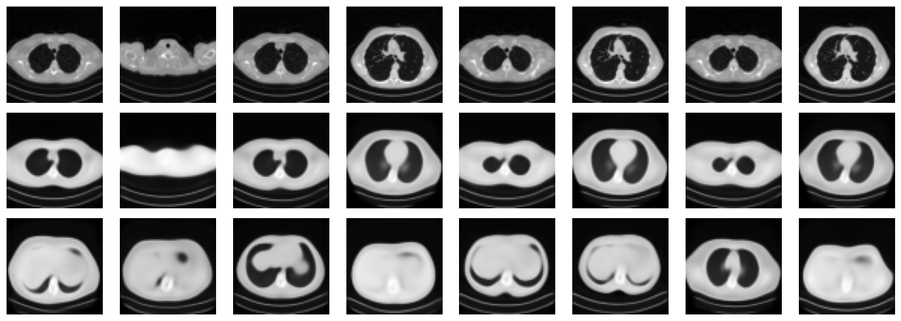
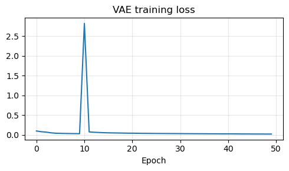
Generative Adversarial Networks (GAN)#
{kind=link}
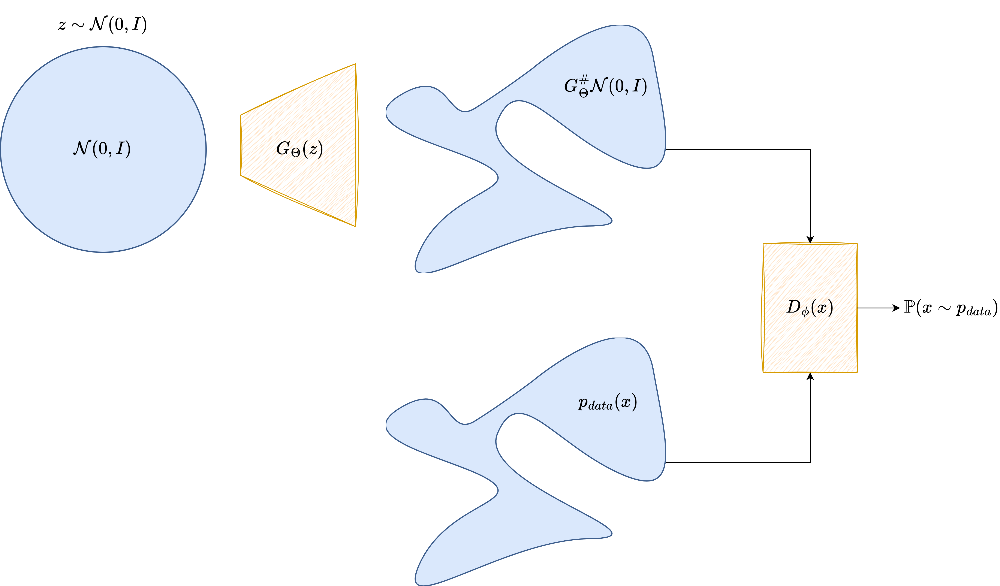
A Generative Adversarial Network takes a very different route. Instead of maximizing an explicit likelihood, it introduces two neural networks that play a game against each other.
The generator is a neural map
which transforms a latent code \(\boldsymbol{z} \sim p(\boldsymbol{z})\) into a synthetic image
The discriminator or critic is another neural network, denoted by \(D_\Psi\), which receives an image and outputs a score indicating whether the image looks real or fake.
In the notation of the figure above, the architectural roles are very clear: the latent variable \(\boldsymbol{z}\) is fed to the generator \(G_\Theta\), which produces a candidate image, while the discriminator \(D_\Psi\) receives either a real image \(\boldsymbol{x}_{\mathrm{real}}\) or a generated one \(\boldsymbol{x}_{\mathrm{fake}}\) and returns a scalar score.
From an architectural point of view, GANs for images are again usually convolutional, but the logic is different from the VAE case.
The generator is typically a decoder-like architecture: it starts from a latent vector, expands it into a coarse feature tensor, and progressively upsamples until it reaches image size.
The discriminator is typically an encoder-like architecture: it progressively downsamples the image, increases the number of feature channels, and finally maps the result to a scalar score.
{kind=link}
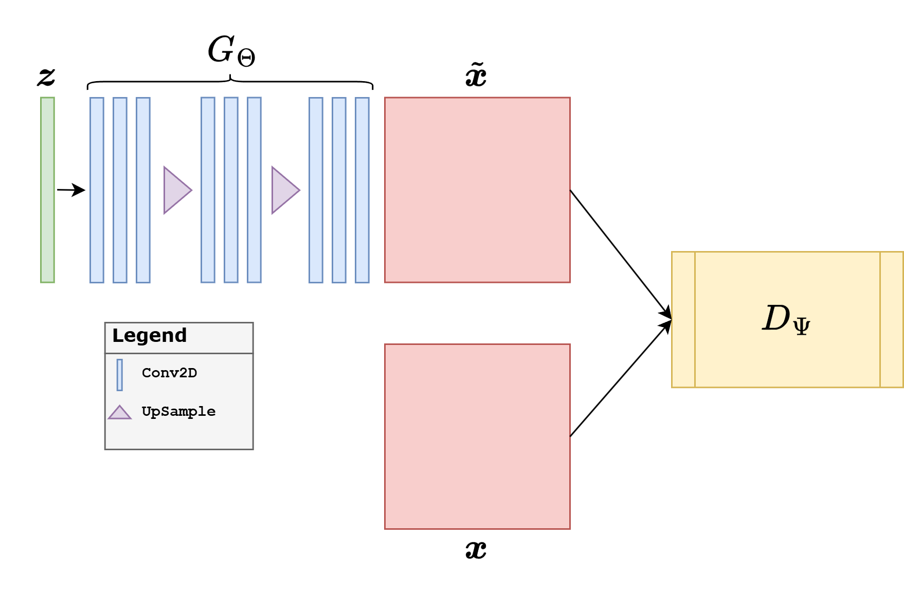
This is why DCGAN-like architectures became so influential: they provided a simple and effective convolutional template for both parts of the adversarial game. In practice, generators often use normalization layers and ReLU, discriminators often use LeakyReLU, and the final activation depends on the loss. A vanilla GAN discriminator often ends with a sigmoid-like decision, whereas a Wasserstein critic should output an unconstrained scalar.
In the original GAN formulation, the two models solve the minimax problem
The discriminator tries to separate real and fake samples, while the generator tries to fool the discriminator. In practice, the generator is often trained with the more stable non-saturating loss
GANs became famous because they can produce visually sharp images. At the same time, they are notoriously delicate to train. The optimization is a two-player game, the discriminator can become too strong or too weak, and the generator may suffer from mode collapse, producing only a small subset of the possible outputs.
This is why the GAN literature expanded enormously. Important variants include DCGAN [32], Conditional GANs [28], Pix2Pix [19], CycleGAN [45], WGAN [2], WGAN-GP [13], LSGAN [27], and StyleGAN [22]. For imaging inverse problems, the conditional and Wasserstein-based variants are often the most relevant.
from torch.nn.utils import spectral_norm
class GResidualBlock(nn.Module):
def __init__(self, in_ch, out_ch):
super().__init__()
self.main = nn.Sequential(
norm_layer(in_ch),
nn.SiLU(),
nn.Upsample(scale_factor=2, mode='bilinear', align_corners=False),
nn.Conv2d(in_ch, out_ch, kernel_size=3, padding=1),
norm_layer(out_ch),
nn.SiLU(),
nn.Conv2d(out_ch, out_ch, kernel_size=3, padding=1),
)
self.skip = nn.Sequential(
nn.Upsample(scale_factor=2, mode='bilinear', align_corners=False),
nn.Conv2d(in_ch, out_ch, kernel_size=1),
)
def forward(self, x):
return self.main(x) + self.skip(x)
class DResidualBlock(nn.Module):
def __init__(self, in_ch, out_ch):
super().__init__()
self.main = nn.Sequential(
spectral_norm(nn.Conv2d(in_ch, out_ch, kernel_size=3, padding=1)),
nn.LeakyReLU(0.2, inplace=True),
spectral_norm(nn.Conv2d(out_ch, out_ch, kernel_size=3, padding=1)),
nn.AvgPool2d(2),
)
self.skip = nn.Sequential(
nn.AvgPool2d(2),
spectral_norm(nn.Conv2d(in_ch, out_ch, kernel_size=1)),
)
def forward(self, x):
return self.main(x) + self.skip(x)
class StableGenerator(nn.Module):
def __init__(self, latent_dim=128):
super().__init__()
self.latent_dim = latent_dim
self.fc = nn.Linear(latent_dim, 512 * 4 * 4)
self.blocks = nn.Sequential(
GResidualBlock(512, 256),
GResidualBlock(256, 128),
GResidualBlock(128, 64),
GResidualBlock(64, 32),
)
self.to_image = nn.Sequential(
norm_layer(32),
nn.SiLU(),
nn.Conv2d(32, 1, kernel_size=3, padding=1),
nn.Sigmoid(),
)
def forward(self, z):
h = self.fc(z).view(z.shape[0], 512, 4, 4)
h = self.blocks(h)
return self.to_image(h)
class StableCritic(nn.Module):
def __init__(self):
super().__init__()
self.stem = spectral_norm(nn.Conv2d(1, 32, kernel_size=3, padding=1))
self.blocks = nn.Sequential(
DResidualBlock(32, 64),
DResidualBlock(64, 128),
DResidualBlock(128, 256),
DResidualBlock(256, 512),
)
self.head = spectral_norm(nn.Linear(512 * 4 * 4, 1))
def forward(self, x):
h = self.stem(x)
h = nn.functional.leaky_relu(h, negative_slope=0.2, inplace=True)
h = self.blocks(h)
h = h.flatten(start_dim=1)
return self.head(h).view(-1)
@torch.no_grad()
def update_ema(ema_model, model, decay=0.999):
for ema_param, param in zip(ema_model.parameters(), model.parameters()):
ema_param.mul_(decay).add_(param, alpha=1.0 - decay)
for ema_buffer, buffer in zip(ema_model.buffers(), model.buffers()):
ema_buffer.copy_(buffer)
The adversarial example below uses a more stable practical recipe than the previous draft. The key change is conceptual: instead of combining a normalized critic with a Wasserstein penalty, we use a spectral-normalized critic trained with the hinge adversarial loss, together with an exponential moving average (EMA) of the generator weights for sampling.
For teaching purposes, it is useful to describe the architecture explicitly. The generator starts from a latent vector \(\boldsymbol{z} \in \mathbb{R}^{128}\). A linear layer first maps this vector to a coarse tensor of size \(512 \times 4 \times 4\). From there, four residual upsampling blocks reconstruct the image progressively,
while the channel dimensions decrease as
Each generator block has two paths. The main path upsamples the feature map, applies a convolution, normalization, a SiLU nonlinearity, and a second convolution. The skip path also upsamples the input, but only uses a \(1 \times 1\) convolution to adjust the number of channels. The outputs of the two paths are added together. This residual design helps the generator preserve coarse information while refining the details stage by stage.
The critic follows the opposite direction. It receives a \(64 \times 64\) image and applies a sequence of residual downsampling blocks until the resolution is reduced to \(4 \times 4\) and the number of channels reaches \(512\). The result is flattened and mapped to a single scalar score. Unlike the generator, the critic does not use Batch Normalization or Group Normalization. Instead, every convolution is controlled by spectral normalization, which directly stabilizes the operator norm of the critic layers. This is one of the most important practical details for GAN stability.
This choice is motivated by stability.
The critic should be strong enough to distinguish real and fake samples, but it should not be normalized in a way that interferes with the Lipschitz control required by the adversarial objective.
The generator is trained with residual upsampling blocks, but the images shown at the end are produced by the EMA generator, which is usually smoother and more stable than the raw last iterate.
The learning rates of generator and critic are separated slightly, which is often called a two time-scale update rule in practice.
The adversarial objective used below is the hinge loss. If \(D_\Psi\) is the critic and \(G_\Theta\) is the generator, then the critic minimizes
while the generator minimizes
The training loop also includes a light R1 regularization step on real images and an EMA update for the generator. The role of R1 is to penalize overly sharp variations of the critic with respect to the input image, while the role of EMA is to smooth the generator trajectory in parameter space. The samples shown in the notebook are therefore generated with the EMA model rather than with the raw final iterate.
Note
This is still a GAN, but it is a more robust teaching configuration than the previous one. In small educational examples, the plain theoretical GAN objective is rarely the one that behaves best numerically. The goal here is to show a configuration that students can actually train without the model collapsing immediately.
torch.manual_seed(0)
latent_dim = 128
G = StableGenerator(latent_dim=latent_dim).to(device)
G_ema = StableGenerator(latent_dim=latent_dim).to(device)
G_ema.load_state_dict(G.state_dict())
C = StableCritic().to(device)
opt_G = torch.optim.Adam(G.parameters(), lr=1e-4, betas=(0.0, 0.99))
opt_C = torch.optim.Adam(C.parameters(), lr=2e-4, betas=(0.0, 0.99))
num_epochs = 50
ema_decay = 0.999
r1_weight = 5.0
r1_every = 16
fixed_z = torch.randn(8, latent_dim, device=device)
g_path = weights_dir / 'GAN_G.pth'
g_ema_path = weights_dir / 'GAN_G_EMA.pth'
c_path = weights_dir / 'GAN_C.pth'
g_history, c_history = [], []
for epoch in range(num_epochs):
G.train()
C.train()
g_epoch = 0.0
c_epoch = 0.0
progress_bar = tqdm(train_loader, desc=f'GAN epoch {epoch + 1}/{num_epochs}', leave=True)
for step, x_real in enumerate(progress_bar, start=1):
x_real = x_real.to(device)
batch_size = x_real.shape[0]
z = torch.randn(batch_size, latent_dim, device=device)
x_fake = G(z)
c_real = C(x_real)
c_fake = C(x_fake.detach())
c_loss = F.relu(1.0 - c_real).mean() + F.relu(1.0 + c_fake).mean()
if step % r1_every == 0:
x_real_reg = x_real.detach().requires_grad_(True)
c_real_reg = C(x_real_reg)
grad_real = torch.autograd.grad(
outputs=c_real_reg.sum(),
inputs=x_real_reg,
create_graph=True,
)[0]
r1_penalty = grad_real.square().reshape(batch_size, -1).sum(dim=1).mean()
c_loss = c_loss + 0.5 * r1_weight * r1_penalty
opt_C.zero_grad()
c_loss.backward()
opt_C.step()
z = torch.randn(batch_size, latent_dim, device=device)
x_fake = G(z)
g_loss = -C(x_fake).mean()
opt_G.zero_grad()
g_loss.backward()
opt_G.step()
update_ema(G_ema, G, decay=ema_decay)
g_epoch += g_loss.item()
c_epoch += c_loss.item()
progress_bar.set_postfix(g_loss=f'{g_loss.item():.5f}', c_loss=f'{c_loss.item():.5f}')
g_history.append(g_epoch / len(train_loader))
c_history.append(c_epoch / len(train_loader))
torch.save(G.state_dict(), g_path)
torch.save(G_ema.state_dict(), g_ema_path)
torch.save(C.state_dict(), c_path)
print(f'Saved generator weights to: {g_path}')
print(f'Saved EMA generator weights to: {g_ema_path}')
print(f'Saved critic weights to: {c_path}')
reloaded_G = StableGenerator(latent_dim=latent_dim)
reloaded_G.load_state_dict(torch.load(g_ema_path, map_location='cpu', weights_only=True))
reloaded_G = reloaded_G.to(device)
reloaded_G.eval()
with torch.no_grad():
x_fake = reloaded_G(fixed_z)
show_batch(x_fake, 'Generated Mayo-like slices from the trained GAN (EMA generator)')
plt.figure(figsize=(5, 3))
plt.plot(g_history, label='Generator')
plt.plot(c_history, label='Critic')
plt.title('GAN training losses')
plt.xlabel('Epoch')
plt.legend()
plt.grid(alpha=0.3)
plt.tight_layout()
plt.show()
GAN epoch 1/50: 100%|██████████| 104/104 [00:41<00:00, 2.53it/s, c_loss=1.95112, g_loss=0.55751]
GAN epoch 2/50: 100%|██████████| 104/104 [00:40<00:00, 2.55it/s, c_loss=1.98154, g_loss=0.14607]
GAN epoch 3/50: 100%|██████████| 104/104 [00:40<00:00, 2.56it/s, c_loss=1.92912, g_loss=-0.12644]
GAN epoch 4/50: 100%|██████████| 104/104 [00:40<00:00, 2.56it/s, c_loss=1.16954, g_loss=-1.23122]
GAN epoch 5/50: 100%|██████████| 104/104 [00:40<00:00, 2.56it/s, c_loss=1.01089, g_loss=1.79324]
GAN epoch 6/50: 100%|██████████| 104/104 [00:40<00:00, 2.55it/s, c_loss=1.45816, g_loss=0.88461]
GAN epoch 7/50: 100%|██████████| 104/104 [00:40<00:00, 2.55it/s, c_loss=1.36047, g_loss=0.55528]
GAN epoch 8/50: 100%|██████████| 104/104 [00:40<00:00, 2.55it/s, c_loss=1.86737, g_loss=0.56084]
GAN epoch 9/50: 100%|██████████| 104/104 [00:40<00:00, 2.55it/s, c_loss=1.49894, g_loss=0.77646]
GAN epoch 10/50: 100%|██████████| 104/104 [00:40<00:00, 2.55it/s, c_loss=1.49958, g_loss=0.57851]
GAN epoch 11/50: 100%|██████████| 104/104 [00:40<00:00, 2.56it/s, c_loss=1.43229, g_loss=0.74812]
GAN epoch 12/50: 100%|██████████| 104/104 [00:40<00:00, 2.56it/s, c_loss=1.51234, g_loss=0.96809]
GAN epoch 13/50: 100%|██████████| 104/104 [00:41<00:00, 2.51it/s, c_loss=1.23360, g_loss=0.72387]
GAN epoch 14/50: 100%|██████████| 104/104 [00:40<00:00, 2.54it/s, c_loss=1.14985, g_loss=0.23202]
GAN epoch 15/50: 100%|██████████| 104/104 [00:40<00:00, 2.55it/s, c_loss=1.22595, g_loss=0.36479]
GAN epoch 16/50: 100%|██████████| 104/104 [00:40<00:00, 2.55it/s, c_loss=0.89047, g_loss=0.66828]
GAN epoch 17/50: 100%|██████████| 104/104 [00:40<00:00, 2.54it/s, c_loss=1.19268, g_loss=0.73507]
GAN epoch 18/50: 100%|██████████| 104/104 [00:40<00:00, 2.55it/s, c_loss=1.43957, g_loss=1.79016]
GAN epoch 19/50: 100%|██████████| 104/104 [00:40<00:00, 2.55it/s, c_loss=1.32110, g_loss=0.33417]
GAN epoch 20/50: 100%|██████████| 104/104 [00:40<00:00, 2.54it/s, c_loss=1.08382, g_loss=1.22090]
GAN epoch 21/50: 100%|██████████| 104/104 [00:40<00:00, 2.55it/s, c_loss=0.94203, g_loss=1.21677]
GAN epoch 22/50: 100%|██████████| 104/104 [00:40<00:00, 2.55it/s, c_loss=0.98300, g_loss=0.83875]
GAN epoch 23/50: 100%|██████████| 104/104 [00:40<00:00, 2.56it/s, c_loss=1.46312, g_loss=0.88724]
GAN epoch 24/50: 100%|██████████| 104/104 [00:41<00:00, 2.54it/s, c_loss=0.88502, g_loss=0.77475]
GAN epoch 25/50: 100%|██████████| 104/104 [00:40<00:00, 2.54it/s, c_loss=1.42174, g_loss=0.60275]
GAN epoch 26/50: 100%|██████████| 104/104 [00:40<00:00, 2.55it/s, c_loss=1.16759, g_loss=0.79829]
GAN epoch 27/50: 100%|██████████| 104/104 [00:40<00:00, 2.54it/s, c_loss=1.07739, g_loss=0.77894]
GAN epoch 28/50: 100%|██████████| 104/104 [00:41<00:00, 2.53it/s, c_loss=0.94370, g_loss=0.36938]
GAN epoch 29/50: 100%|██████████| 104/104 [00:40<00:00, 2.54it/s, c_loss=1.38598, g_loss=0.98329]
GAN epoch 30/50: 100%|██████████| 104/104 [00:41<00:00, 2.52it/s, c_loss=1.25891, g_loss=0.84908]
GAN epoch 31/50: 100%|██████████| 104/104 [00:40<00:00, 2.55it/s, c_loss=0.89671, g_loss=1.00695]
GAN epoch 32/50: 100%|██████████| 104/104 [00:40<00:00, 2.56it/s, c_loss=1.10515, g_loss=0.87096]
GAN epoch 33/50: 100%|██████████| 104/104 [00:40<00:00, 2.56it/s, c_loss=1.06296, g_loss=0.83597]
GAN epoch 34/50: 100%|██████████| 104/104 [00:40<00:00, 2.55it/s, c_loss=1.25138, g_loss=0.41866]
GAN epoch 35/50: 100%|██████████| 104/104 [00:40<00:00, 2.55it/s, c_loss=0.89498, g_loss=0.80918]
GAN epoch 36/50: 100%|██████████| 104/104 [00:40<00:00, 2.56it/s, c_loss=1.10118, g_loss=0.87573]
GAN epoch 37/50: 100%|██████████| 104/104 [00:40<00:00, 2.55it/s, c_loss=1.01399, g_loss=0.13861]
GAN epoch 38/50: 100%|██████████| 104/104 [00:40<00:00, 2.54it/s, c_loss=1.18976, g_loss=0.77676]
GAN epoch 39/50: 100%|██████████| 104/104 [00:40<00:00, 2.55it/s, c_loss=1.13549, g_loss=0.68222]
GAN epoch 40/50: 100%|██████████| 104/104 [00:40<00:00, 2.56it/s, c_loss=0.96023, g_loss=1.13367]
GAN epoch 41/50: 100%|██████████| 104/104 [00:40<00:00, 2.56it/s, c_loss=1.09068, g_loss=0.54153]
GAN epoch 42/50: 100%|██████████| 104/104 [00:40<00:00, 2.56it/s, c_loss=0.97075, g_loss=1.12252]
GAN epoch 43/50: 100%|██████████| 104/104 [00:41<00:00, 2.53it/s, c_loss=0.84740, g_loss=0.58891]
GAN epoch 44/50: 100%|██████████| 104/104 [00:40<00:00, 2.57it/s, c_loss=0.80570, g_loss=0.40819]
GAN epoch 45/50: 100%|██████████| 104/104 [00:41<00:00, 2.51it/s, c_loss=1.08816, g_loss=0.89959]
GAN epoch 46/50: 100%|██████████| 104/104 [00:40<00:00, 2.55it/s, c_loss=0.83627, g_loss=1.28615]
GAN epoch 47/50: 100%|██████████| 104/104 [00:40<00:00, 2.56it/s, c_loss=0.73377, g_loss=1.73625]
GAN epoch 48/50: 100%|██████████| 104/104 [00:40<00:00, 2.56it/s, c_loss=0.95479, g_loss=0.59786]
GAN epoch 49/50: 100%|██████████| 104/104 [00:41<00:00, 2.52it/s, c_loss=1.17214, g_loss=0.13312]
GAN epoch 50/50: 100%|██████████| 104/104 [00:41<00:00, 2.52it/s, c_loss=0.76511, g_loss=0.88630]
Saved generator weights to: C:\Users\tivog\computational-imaging\years\2025-26\weights\GAN_G.pth
Saved EMA generator weights to: C:\Users\tivog\computational-imaging\years\2025-26\weights\GAN_G_EMA.pth
Saved critic weights to: C:\Users\tivog\computational-imaging\years\2025-26\weights\GAN_C.pth
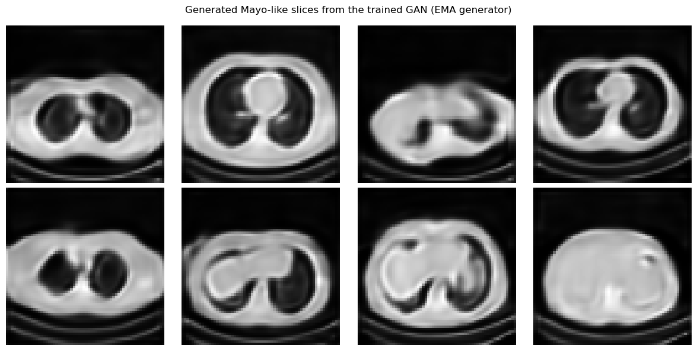
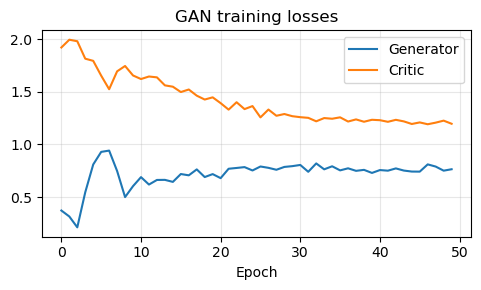
Generative Priors for Inverse Problems#
One of the first influential ways to connect deep generative models with inverse problems is the Deep Generative Prior (DGP) viewpoint [6, 14, 30, 35]. The central idea is to replace a hand-crafted prior, such as sparsity or total variation, with a pretrained generator \(G\). The prior is therefore enforced not by a penalty written directly on the image, but by restricting the reconstruction to the family of images that the network can generate.
Consider a blurred and noisy measurement
If the unknown image is assumed to lie approximately in the range of a generator \(G\), then one can search for a latent code whose generated image explains the data:
The reconstruction is then
More generally, if \(\mathcal{D}(\cdot,\cdot)\) is the data-fidelity term associated with the noise model and \(p(\boldsymbol{z})\) is the latent prior, one writes
This gives a useful geometric interpretation. The generator defines a nonlinear low-dimensional set
and the inverse problem is solved over \(\mathcal{M}\) instead of the whole ambient image space. When \(d \ll n\), the search space is dramatically reduced, and the reconstruction automatically inherits anatomical, textural, and structural regularities learned from training data.
From a Bayesian viewpoint, this is a latent-variable MAP estimator. One starts from a simple latent law, often \(\boldsymbol{z} \sim \mathcal{N}(\boldsymbol{0}, I)\), pushes it through the generator, and thereby induces a prior on images. In the VAE case, the decoder plays the role of \(G\) and the latent prior is built into the model. In the GAN case, the generator is explicit, but the induced image density is usually implicit rather than analytically tractable.
The main theoretical attraction of DGP is that recovery can depend on the intrinsic latent dimension rather than the full number of pixels. Results of Bora et al. show that, under random measurement models and regularity assumptions on the generator, one can obtain compressed-sensing-style guarantees with a number of measurements scaling with the latent dimension up to model-dependent factors [6]. Hand and Voroninski further study the geometry of the corresponding empirical-risk objective in stylized random-network settings and show that it can be much better behaved than a generic nonconvex problem [14]. These results do not imply that every practical generator is easy to optimize, but they explain why generator priors can be powerful in highly undersampled regimes.
In practice, DGP reconstruction is usually performed by freezing the generator and optimizing only the latent code for each new datum. This makes the method model-based rather than purely feed-forward: the forward operator \(K\) remains explicit, data consistency is enforced at test time, and no paired training set \((\boldsymbol{y}^\delta, \boldsymbol{x})\) is needed for the reconstruction stage itself once the generator has been trained. There is also a second route that is very important in imaging: conditional GANs such as Pix2Pix learn a direct map from measurement to reconstruction. That belongs more to the end-to-end setting, whereas the latent-optimization example below illustrates the genuine prior-based DGP viewpoint.
{kind=link}
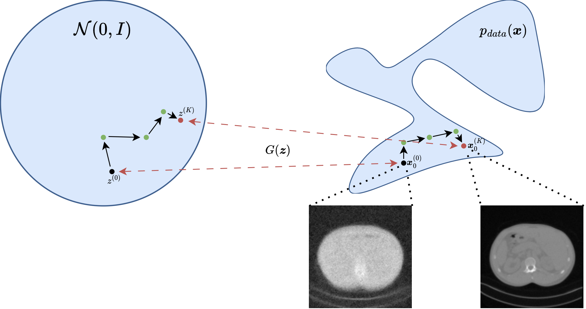
A useful practical detail is that one may optimize only \(\boldsymbol{z}\), or augment the model with a small correction term to reduce range mismatch. The pure DGP formulation is the cleanest conceptually, but it is also the one most exposed to representation error: if the true image cannot be written well as \(G(\boldsymbol{z})\), then even perfect optimization cannot recover it exactly.
K = operators.Blurring(
img_shape=(64, 64),
kernel_type='motion',
kernel_size=9,
motion_angle=20,
)
with torch.no_grad():
x_true = test_dataset[0].unsqueeze(0).to(device)
y_delta = K(x_true)
y_delta = y_delta + utilities.gaussian_noise(y_delta, noise_level=0.01)
def latent_reconstruction(generator, latent_shape, y_delta, K, num_steps=300, lr=1e-2, lam=1e-3):
z = torch.randn(latent_shape, device=device, requires_grad=True)
optimizer = torch.optim.Adam([z], lr=lr)
for _ in range(num_steps):
x_hat = generator(z)
data_loss = torch.mean((K(x_hat) - y_delta) ** 2)
prior_loss = lam * torch.mean(z ** 2)
loss = data_loss + prior_loss
optimizer.zero_grad()
loss.backward()
optimizer.step()
with torch.no_grad():
return generator(z).detach().clamp(0.0, 1.0)
vae_generator = lambda z: reloaded_vae.decode(z)
gan_generator = lambda z: reloaded_G(z)
x_vae = latent_reconstruction(vae_generator, (1, 64), y_delta, K, num_steps=300, lr=1e-2, lam=1e-3)
x_gan = latent_reconstruction(gan_generator, (1, 128), y_delta, K, num_steps=300, lr=1e-2, lam=1e-3)
mse_vae = torch.mean((x_vae - x_true) ** 2).item()
mse_gan = torch.mean((x_gan - x_true) ** 2).item()
plt.figure(figsize=(12, 3))
plt.subplot(1, 4, 1)
plt.imshow(x_true.cpu().squeeze(), cmap='gray')
plt.title('Ground truth')
plt.axis('off')
plt.subplot(1, 4, 2)
plt.imshow(y_delta.cpu().squeeze(), cmap='gray')
plt.title('Blurred datum')
plt.axis('off')
plt.subplot(1, 4, 3)
plt.imshow(x_vae.cpu().squeeze(), cmap='gray')
plt.title(f'VAE prior\nMSE: {mse_vae:.5f}')
plt.axis('off')
plt.subplot(1, 4, 4)
plt.imshow(x_gan.cpu().squeeze(), cmap='gray')
plt.title(f'GAN prior\nMSE: {mse_gan:.5f}')
plt.axis('off')
plt.tight_layout()
plt.show()
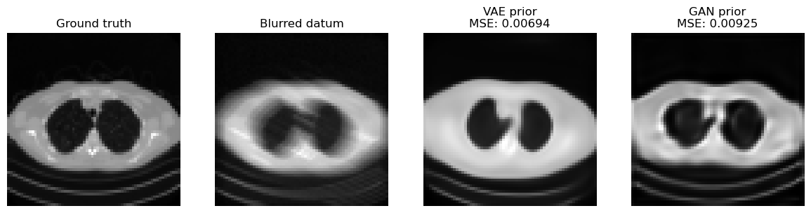
The comparison above makes the trade-off between the two priors visible, but the broader DGP picture is worth stating explicitly.
The VAE prior is often easier to optimize because its latent space is more regular and smoother.
The GAN prior can produce sharper results, but the latent optimization may be more brittle.
More generally, a DGP prior can inject image statistics that classical convex penalties cannot express, drastically reduce the effective search space, and work with an explicit forward model without requiring paired supervision at reconstruction time.
The main cost is generator bias. If the true image lies outside or far from the generator range, the method can only recover the closest plausible image according to the model, not necessarily the correct one.
The latent optimization is nonconvex, can depend strongly on initialization and hyperparameters, and may trade data consistency against realism. GAN priors are especially sensitive to mode collapse or irregular latent geometry; VAE priors are usually more stable but can be blurrier.
Rare structures, pathologies, or out-of-distribution details are precisely the features most likely to be projected away by an overly restrictive generator.
Warning
A visually plausible reconstruction obtained from a deep generative prior is not automatically a reliable reconstruction. In DGP methods the prior is enforced by the range of the generator itself, so missing modes, training bias, or latent-optimization errors can directly appear as hallucinated structure or suppressed detail. This limitation is one of the main reasons why diffusion-based priors became so important: they are usually much richer and more flexible than a fixed low-dimensional latent generator.
Exercises#
Explain the difference between an explicit generative model and an implicit generative model.
In a deep latent variable model, what is the role of the latent variable \(z\)?
Derive the two terms appearing in the VAE ELBO and explain their meaning.
Why does the reparameterization trick matter for VAE training?
What is the role of the discriminator or critic in a GAN?
Why are WGAN and WGAN-GP often preferred over the original GAN objective in practice?
Code exercise: change the latent dimension from \(128\) to \(32\) or \(256\) and compare the quality of VAE and GAN samples.
Code exercise: vary the regularization parameter \(\lambda\) in the latent inverse-problem example and observe how the reconstruction changes.
Further Reading#
For the general probabilistic background of latent-variable models, see [5]. For the original VAE paper, see [24]. For the \(\beta\)-VAE variant, see [17]. For the original GAN formulation, see [12]. For convolutional GAN design, see [32]. For conditional GANs, see [28]. For Wasserstein GANs and their stabilized variant, see [2] and [13]. For image-to-image adversarial models, see [19] and [45]. For StyleGAN, see [22]. For influential generator-prior formulations in inverse problems, see [6] and the broader review [30]. For theory on the geometry of latent empirical-risk minimization, see [14]. For an algorithmic treatment of linear inverse problems with GAN priors and provable guarantees, see [35].